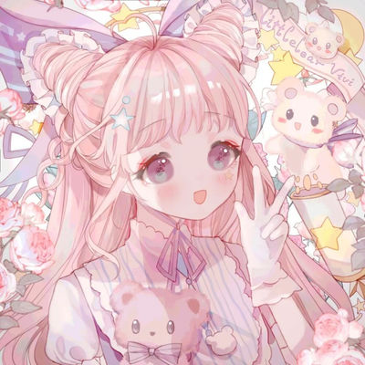

陈璐莎
陈璐莎，广州新华学院的大二学生，数字媒体技术专业
在校园生活中，我积极参与西部山区计划摆摊活动，这让我有机会[你从这些活动中获得的经验或技能]。我也对[你的兴趣爱好]非常感兴趣，这让我在忙碌的学习之余能够放松身心。 我认为自己是一个内敛的人，我喜欢平静的生活方式。我擅长抓住细节，并且在阅读小说方面有一定的经验。 未来，我希望能够学习新技能，并且我相信通过在新华学院的学习，我能够为实现这个目标打下坚实的基础。 很高兴在这里认识大家，期待与你们一起学习和成长。



小学
脾气暴躁，当课代表
初中
补课生涯
高中
忙里偷闲
大学
参加社团活动，上课
| 陈璐莎 个人资料 | |||||||||
|---|---|---|---|---|---|---|---|---|---|
| 姓名 | 陈璐莎 | 性别 | 女 | 出生地 | 湖南省 | ||||
| 出生日期 | 2005年2月4日 | 就读院校 | 广州新华学院 | 职业 | 学生 | ||||
| 星座 | 双鱼 | 身高 | 161 cm | 生肖 | 鸡 | ||||
| 专业 | 数媒 | 爱好 | 看小说，听歌 | 座右铭 | 死人微活 | ||||